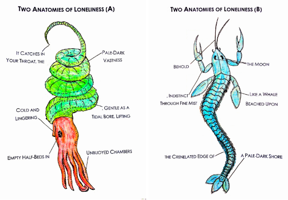
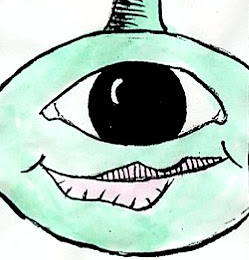

|
After a chance encounter at the supermarket, Gregor tells a meandering tale to Richard detailing the challenges he faced prior to their friendship ~ page count: 1 / 2 / 3 / 4 / 5 / 6 / 7 / 8 / 9 / 10 / 11 / 12 / 13 / 14 / 15 / 16 / 17 / 18 / 19 / 20 / 21 / 22 / 23 / 24 / 25 / 26 / 27 / 28 / 29 / 30 / 31 / 32 / 33 / 34 / 35 / 36 /37 / 38 / 39 / 40 / 41 / 42 / 43 |
|  | "Two Anatomies of Loneliness"A Visual Poem |
 |
"Never never never never never"In this science-fiction tale, set not so far in the future, humanity faces the most frightening cosmic threat: loneliness.~page count: 1 / 2 / 3 / 4 / 5 / 6 / 7 / 8 / 9 / 10 / 11 / 12 |
 |
"Michael Tetzlaff and the World's Best Borscht"Originally published in Scoff Zine, 2013.~page count: 1 / 2 / 3 / 4 |
|  | "The Cyclops Shark"Originally published in SAGA, 2011.~page count: 1 / 2 / 3 |